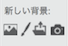
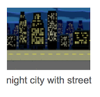
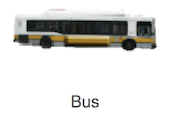
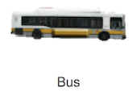
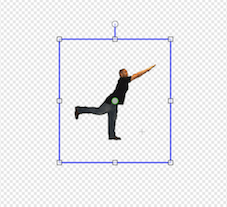
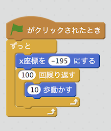
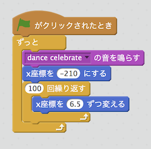

SCRATCH
私の作ったイベント
作り方
1.背景の設定
新しい背景（写真マーク）を選択＞テーマ「街」を選択＞「night city with street」を選択

2.スプライトの削除
「猫」のスプライトを選択＞ダブルクリック＞削除
3.新しいスプライトの設定
新しいスプライト＞キャラをクリック＞
人カテゴリーから「Amon」を選択＞乗り物カテゴリーから「Bus」を選択
 

4.スプライトのサイズ調整
「Amon」を選択＞コスチューム＞選択ツールで選択＞バスにサイズを合わせる

5.「Amon」のスクリプト設定
イベント「グリーンのフラグがクリックされたとき」＞制御「ずっと」「100回繰り返す」を選択＞
動き「X座標を-195にする」「10歩動かす」を選択＞それぞれを組み合わせる

6.「Bus」のスクリプト設定
イベント「グリーンのフラグがクリックされたとき」＞制御「ずっと」「100回繰り返す」を選択＞
動き「X座標を−210にする」「X座標を6.5ずつ変える」を選択＞音「の音を鳴らす」に「dance celebrate」を選択
